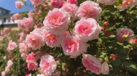
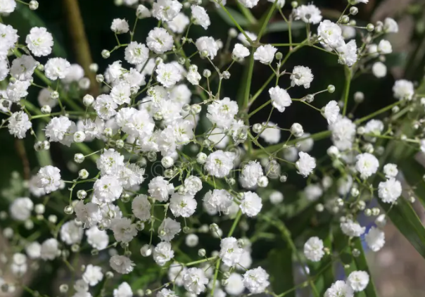

Flower Symbolisms
Tulips
White Tulips : Purity & Forgiveness
Symbolises peace, forgiveness, and respect.
Commonly given as an apology or to show sympathy to one another.
Yellow Tulips : Happiness & Cheerfulness
Represents joy, friendship, and optimism.
Perfect for brightening someone’s day or celebrating a new beginning.

Roses
Red Roses : Love & Passion
Symbol of deep love, romance, and desire.
Often given on anniversaries, Valentine's Day, or to express true love to eachother.
White Roses : Purity & New Beginnings
Represents innocence, purity, and new beginnings.
Commonly used in weddings, funerals (symbolising remembrance).
Pink Roses : Sincerity & Gratitude
A symbol of appreciation and sincerity.
Often used to say "thank you" or show appreciation.

Babys Breath
White Baby’s Breath : Purity & Innocence
Symbolizes pure love, new beginnings, and sincerity.
Commonly used in weddings, christenings, and memorials.
Pink Baby’s Breath – Love & Femininity
Represents romantic love, compassion, and gentleness.
Often used in baby showers, Mother’s Day bouquets, and romantic gifts.
For more information on symbolisms click here!